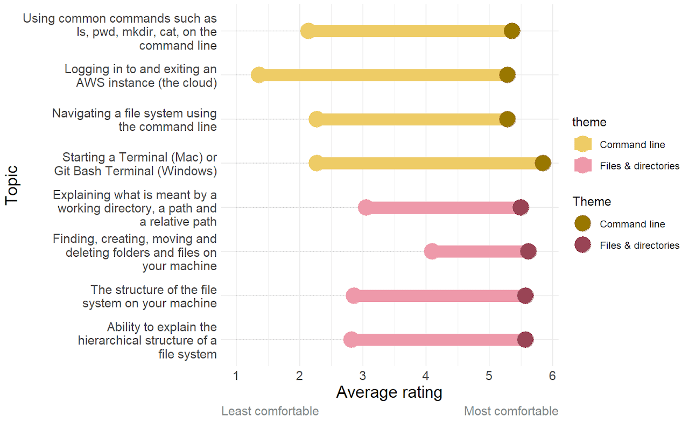
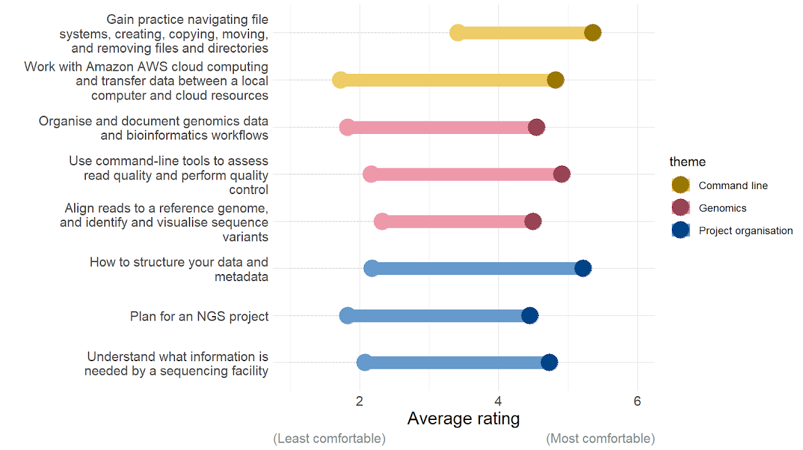
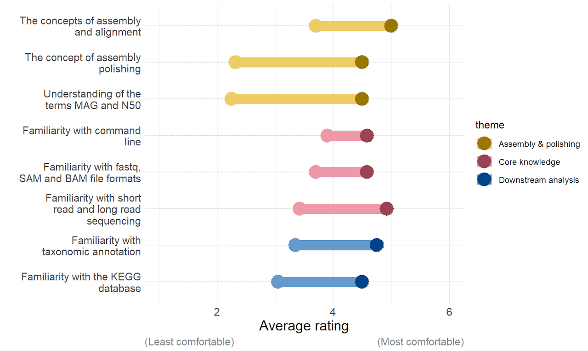

In depth: course feedback
We've finished our analysis of the feedback from our courses held at the end of last year: Prenomics, Genomics and Metagenomics. We're pleased to see that on average participants saw an improvement across all of the learning outcomes for all of our courses - if they didn't we'd be doing something wrong!
Methodology
We ask all our learners the same questions before and after the course, asking them to rate their level of comfort with, and understanding of, a range of topics. The options range from "I don't understand what this involves" to "Confident". For analysis purposes these answers are recoded as numbers with 1 being the least confident and 6 being the most confident. We're interested in the mean scores across participants and how they differ before and after the course.
The dumbbell charts you will see below indicate the average improvement in score for each criteria. The lighter colour circle represents the score before the course, and the darker one represents the score after the course.
We don't currently have a way to track individual participants and how their scores change. Everything is done on averages. This gives us a good overall idea of how learners' understanding might have improved as a result of the course.
Prenomics
Overall the biggest improvements were seen in our Prenomics course, which is what we might expect. Most participants started with little to no knowledge of most of the topics discussed, and we saw their confidence soar over the two day course. Prenomics is designed to give participants a gentle introduction to the command line and provide a confidence boost for those who might feel intimidated, so we're really happy to see that this seems to be working.
In particular participants saw a big leap in their confidence using the command line with a mean score increase of almost 3.5 points. On average learners finished the course feeling somewhere between "comfortable most of the time" (5) and "confident" (6), which is excellent news.

Genomics
We also saw big improvements in confidence in Genomics. We also saw great improvement in Genomics topics - approximately equal across all themes. Most participants started the course with a middling level of confidence using the command line, likely as a result of taking part in Prenomics beforehand. The average increase in score was between 2 and 2.5 points depending on the topic, with the average score after taking the course hovering around 5 - "fairly comfortable most of the time".

Metagenomics
The Metagenomics course feedback was of particular interest as it was the first time we had run the course, so we were keen to see how people got on. Overall, participants finished the course with an average understanding score between 4 ("Fairly comfortable in some aspects") and 5 ("Comfortable most of the time") for all of the topics. Most learners started the course with a higher initial understanding for core knowledge such as command line and sequencing, so the scope for improvement was more limited than in, for example, the Prenomics course. Overall we're pleased with the increase in understanding but are looking at how we can make things even clearer during the course, to boost confidence even further.

Upcoming courses
We will be running our Metagenomics course again from Tuesday 11 April until Friday 21 April 2023. This course is aimed at environmental scientists looking to use high performance computing for metagenomics analysis, but would be suitable for anyone with an interest in metagenomics. ➡️ Register here! ⬅️
We will also be running a workshop on Statistically Useful Experimental Design on Friday 14 April 2023. This course will be held in-person at University of York campus and is primarily discussion-based. ➡️ Register here! ⬅️